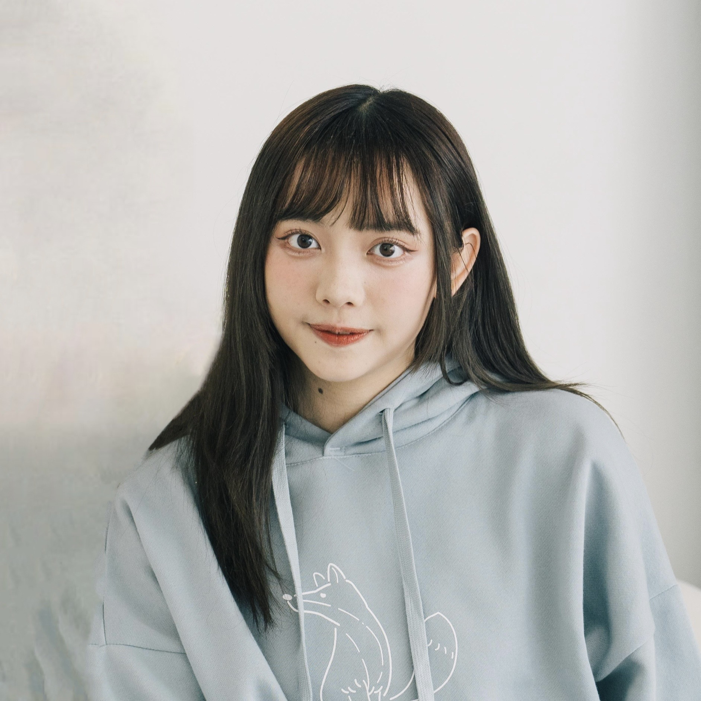

Audio & music source separation
Separating singers and vocal parts in ensemble recordings, with a focus on singer conditioning and transfer across musical settings.
Audio · Music · Machine Learning
PhD Student · Computer Science · UIUC
I’m a PhD student in Computer Science at the University of Illinois Urbana-Champaign (UIUC), advised by Prof. Minje Kim. My research focuses on machine learning for audio and music, particularly source separation and tools that support musical practice and creativity.
Previously, I earned my M.S. in Electrical and Computer Engineering from the University of Michigan, where I worked with Prof. Hao-Wen Dong on a cappella source separation and AI-assisted rehearsal tools.
As an a cappella performer, arranger, and producer, I draw on my musical experience to develop systems grounded in the needs of musicians.
tingyup2@illinois.edu
What I work on
Separating singers and vocal parts in ensemble recordings, with a focus on singer conditioning and transfer across musical settings.
Exploring informed and generative approaches to audio modeling, including symbolic music cues and generative source priors.
Connecting audio analysis, visualization, and performance feedback to help musicians practice and understand ensemble music.
Papers & presentations
NeurIPS Workshop on AI for Music · 2025
A multilingual a cappella dataset with isolated vocal stems for source separation and AI-assisted rehearsal research.
ISMIR Late-Breaking Demo · 2025
Dataset curation and a two-step separation pipeline for vocal percussion and vocal harmony.
* Equal contribution.
ACM UIST Adjunct · 2025
An interactive rehearsal system combining group recordings, musical pattern visualization, and feedback for individual practice.
See my CV for the full research record.
From recordings to practice
Dataset · Source separation
Multilingual a cappella recordings with isolated vocal stems, supporting the separation of individual vocal parts and vocal percussion.
My contribution: Developed the dataset and fine-tuned Demucs-based separation models, evaluating how separation quality affects downstream pitch and rhythm estimation.
With Kexin Phyllis Ju and Prof. Hao-Wen Dong.
Listen to separation demos ↗Interactive systems · Music learning
An interactive rehearsal system that helps novice a cappella singers practice with group recordings, part-wise visualizations, and performance feedback.
My contribution: Conducted a formative study of novice a cappella practice and co-designed the system to support self-diagnosis and ensemble awareness.
With Kexin Phyllis Ju and Prof. Hao-Wen Dong.
Explore the rehearsal system ↗
Beyond the lab
I’ve been a professional a cappella artist since 2015, working as a performer, arranger, composer, and vocal coach. As a core member of Seagull-K, I’ve performed in more than 500 concerts and televised showcases.
That experience shapes the questions I ask about audio and music technology, from separating voices in an ensemble to supporting individual practice.
Explore my music portfolio ↗Get in touch
For research collaborations and questions about my work:
tingyup2@illinois.eduSiebel School of Computing and Data Science
University of Illinois Urbana-Champaign
Education, research experience, publications, and musical background.
Download CV PDF · 2 pages